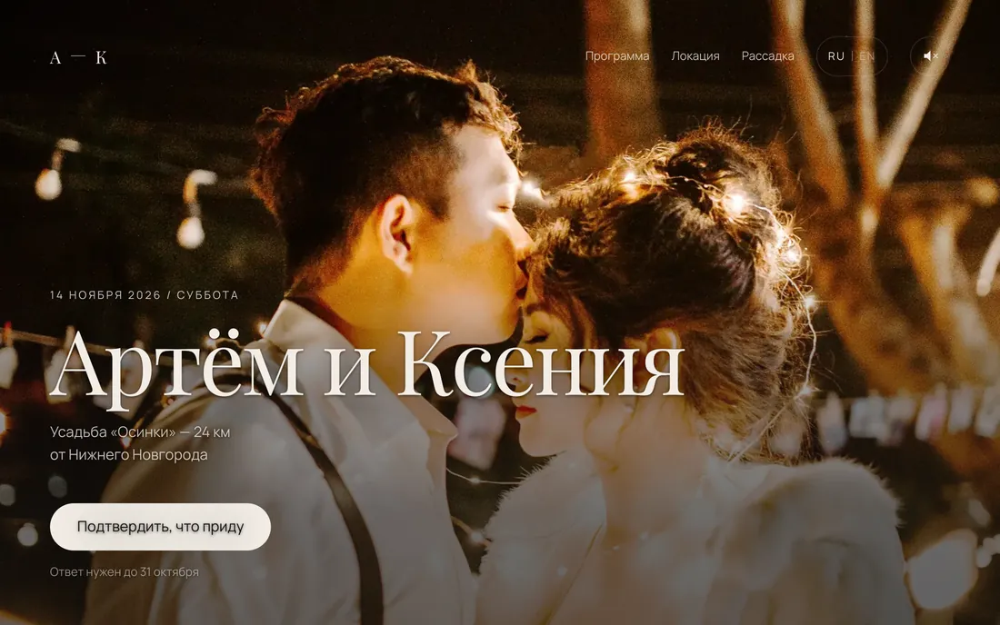
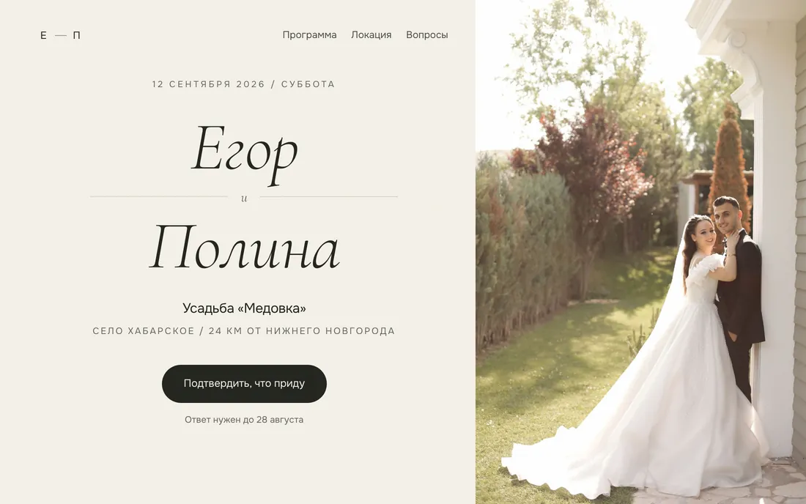
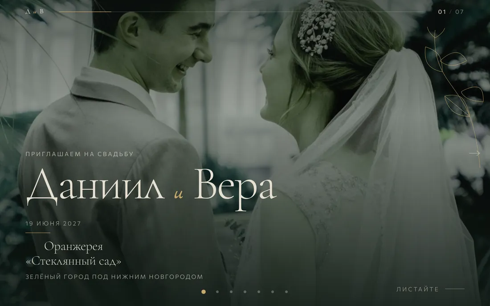
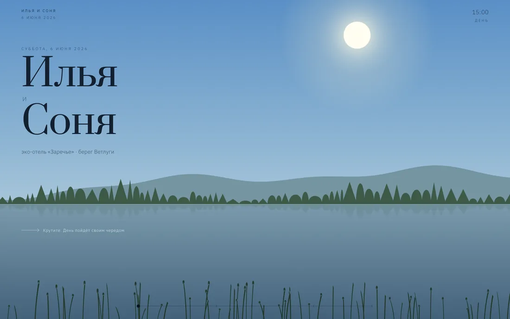
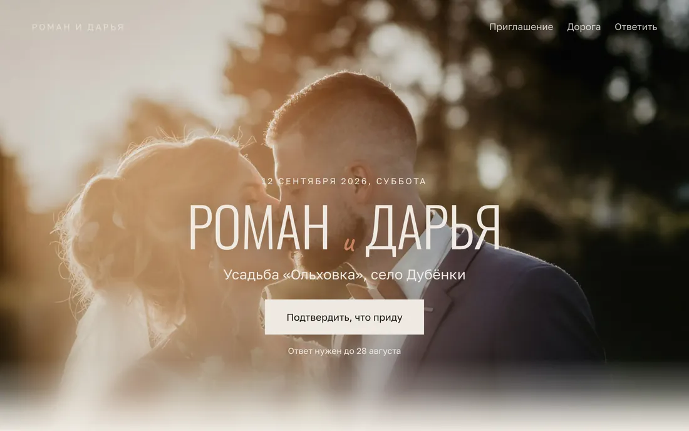
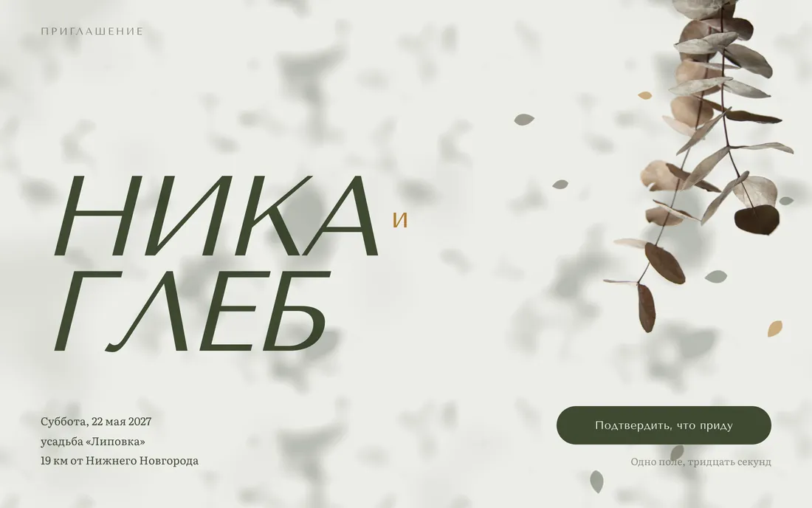
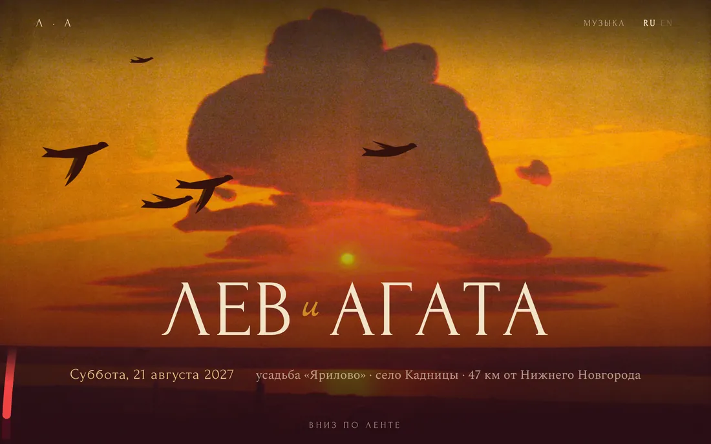
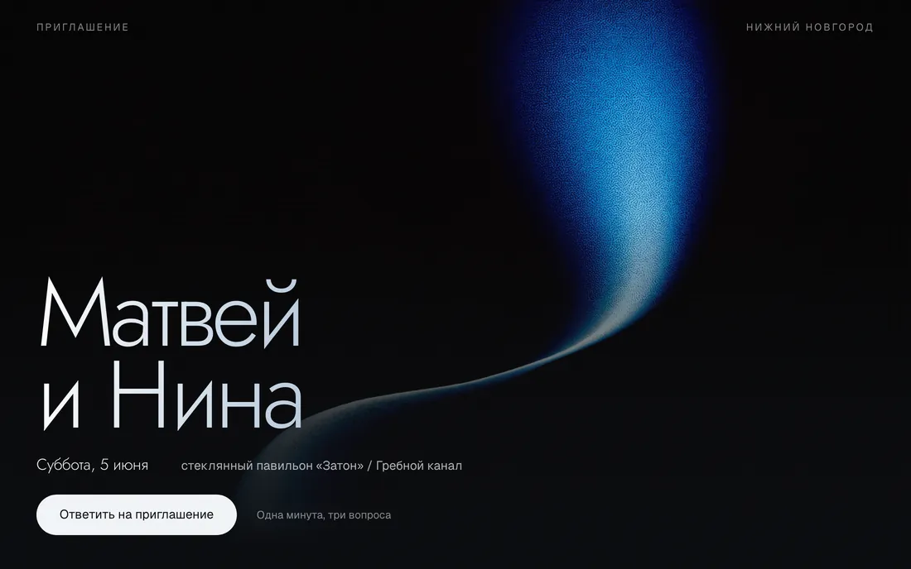
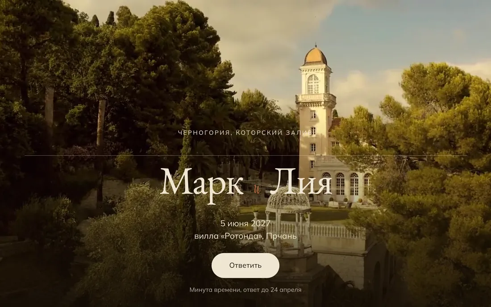
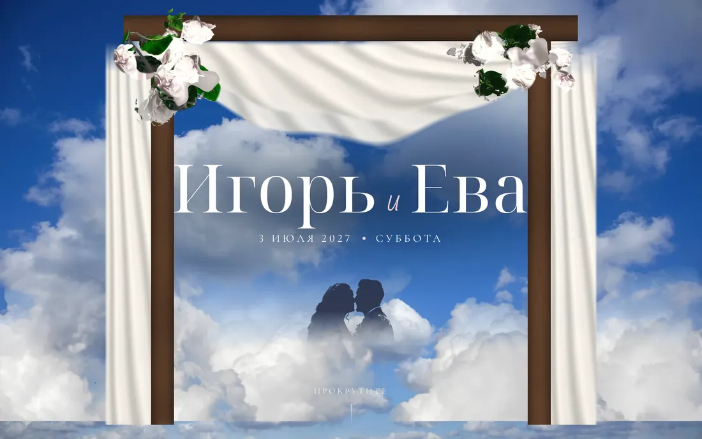

Сайт-приглашение вместо бумажной открытки
Когда, где, как доехать, что надеть — и отвечают, придут ли. Ответы приходят вам, считать по переписке ничего не нужно.
Работы
Они отличаются не только цветом. У каждого своя механика: один листается вбок, другой идёт вниз длинной лентой, третий живёт одним экраном. Откройте любой — это настоящие сайты, а не картинки.

Открыть сайтСамый большой: двенадцать блоков, отсчёт до даты, схема рассадки с поиском своего стола, переключатель русский / английский и тихая фоновая музыка.

Открыть сайтСветлый и спокойный. Имена написаны от руки, буквы появляются по одной. Галерея развёрнута как журнальный разворот, солнце идёт по небу вместе с прокруткой.

Открыть сайтЛистается вбок — на телефоне пальцем, как сторис. Семь экранов, на каждом из линии прорастают ветви, а подписи пишутся от руки прямо на глазах.

Открыть сайтПока гость листает, за текстом идёт целый день: светлеет небо, поднимается солнце, у воды загораются огни. К последнему блоку — ночь и звёзды.

Открыть сайтКороткий и честный: шесть блоков, ничего лишнего. Ответ гостя — в одно поле. Если свадьба скоро и хочется просто и красиво — этого хватает.

Открыть сайтВетвь свешивается сверху, как над головой, и тень от неё медленно ходит по светлой бумаге. Имена во весь экран, а середина оставлена пустой — это и есть полдень.

Открыть сайтНебо здесь — не фотография, а живопись: закат Куинджи. Поперёк него сами по себе летят голуби, а вниз по странице разворачивается красная лента с узлами — по узлу на каждый час свадебного дня.

Открыть сайтЕдинственный сайт с живым видео на фоне: синее полотно света медленно движется за текстом, а по именам проходит блик, как по стеклу. Для вечерней свадьбы, которая начинается на закате.

Открыть сайтСвадьба за границей. За именами идёт непрерывный облёт виллы в золотой час, и на втором экране он останавливается: дрон садится, и пара начинает говорить. Есть блок про перелёт и трансфер.

Открыть сайтПрокрутка ведёт гостя внутрь заросшей каменной арки: она растёт, проходит мимо, и за ней открывается другой экран. Так трижды за страницу, и каждый раз арка другая.
Цвет
Ниже — настоящий блок приглашения. Нажмите на кружок: поменяются и цвета, и шрифт. Так же перекрашивается весь сайт целиком — под платье, под цветы, под то, что вам нравится.
12 сентября 2026 / суббота
Артём и Ксения
Усадьба «Осинки» — 24 км от Нижнего Новгорода
Подтвердить, что придуЭто лишь несколько примеров. Пришлите фото платья, букета или зала — соберу палитру по ним.
Правки
Готовый сайт — это основа, а не шаблон, который нельзя трогать. Скажите словами, что не так — поправлю и пришлю ссылку заново.
Любое слово. Обращение к гостям, история знакомства, просьбы про дресс-код — как вам удобно говорить.
Ваши вместо стоковых. Со съёмки, из телефона, старые — я приведу их к одному виду.
Не нужен отсчёт — уберём. Нужна карта, список подарков, трансфер, детская комната — добавим.
Под ваши цветы и платье. Хоть по фото приглашения, если оно уже нарисовано.
Кто придёт, кто с парой, у кого аллергия. Приходят вам в телеграм или таблицей.
Можно короткую ссылку вроде artem-ksenia.ru — покупается отдельно, помогу оформить.
Сколько стоит
Точная цена зависит от объёма правок и срока. Скажу её до начала работы, после разговора она не растёт.
Простой
от 2 500 ₽
Готовый сайт на выбор, ваши тексты и фото, ваша палитра. Шесть блоков, ответ гостя в одно поле.
3–4 дня
Средний
от 5 000 ₽
Плюс разговор о вашей истории, галерея, отсчёт до даты, кнопка «положить в календарь» и полноценная форма ответа со сводкой для вас.
от недели
Свой
от 9 000 ₽
Дизайн и анимация с нуля под вашу свадьбу. Рассадка с поиском своего стола, два языка, музыка. Год хостинга в подарок — сайт живёт и после свадьбы.
от двух недель
Как проходит
Открываете работы выше и говорите: «вот этот, но в зелёном». Или присылаете свой референс.
Фото, даты, адрес, тайминг дня. Точный список — в последнем блоке, он короткий.
Через несколько дней присылаю ссылку. Открывается с любого телефона, ничего ставить не нужно.
Вы пишете, что поменять — я правлю и присылаю ту же ссылку обновлённой. Два круга правок входят в цену.
Одна ссылка в любой мессенджер. Ответы копятся у вас, сайт работает до свадьбы и после.
Что нужно от вас
Не обязательно всё сразу. Начать можно с первых двух пунктов, остальное дособерём по ходу.